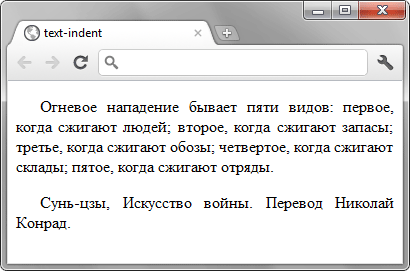

text-indent
Устанавливает величину отступа первой строки блока текста (например, для абзаца <p>). Воздействия на все остальные строки не оказывается. Допускается отрицательное значение для создания выступа первой строки, но следует проверить, чтобы текст не выходил за пределы окна браузера.
Краткая информация
| Значение по умолчанию | 0 |
|---|---|
| Наследуется | Да |
| Применяется | К блочным элементам |
Синтаксис
text-indent: <размер> | <проценты>Значения
В качестве значений принимаются любые единицы длины, принятые в CSS — например, пиксели (px), дюймы (in), пункты (pt) и др. При задании значения в процентах, отступ первой строки вычисляется в зависимости от ширины блока. Допустимо использовать отрицательные значения, но при этом в разных браузерах возможно появление ошибок.
Пример
<!DOCTYPE html>
<html>
<head>
<meta charset="utf-8">
<title>text-indent</title>
<style>
P {
text-indent: 1.5em; /* Отступ первой строки */
text-align: justify; /* Выравнивание по ширине */
}
</style>
</head>
<body>
<p>Огневое нападение бывает пяти видов: первое, когда
сжигают людей; второе, когда сжигают запасы; третье,
когда сжигают обозы; четвертое, когда сжигают склады;
пятое, когда сжигают отряды.</p>
<p>Сунь-цзы, Искусство войны. Перевод Николай Конрад.</p>
</body>
</html>Результат данного примера показан на рис. 1.

Рис. 1. Применение свойства text-indent
Объектная модель
Объект.style.textIndent
Спецификация
| Спецификация | Статус |
|---|---|
| CSS Text Level 3 | Рабочий проект |
| CSS Transitions | Рабочий проект |
| CSS Level 2 (Revision 1) | Рекомендация |
| CSS Level 1 | Рекомендация |
Браузеры
| Internet Explorer | Chrome | Opera | Safari | Firefox |
| 3 | 1 | 3.5 | 1 | 1 |
| Android | Firefox Mobile | Opera Mobile | Safari Mobile |
| 1 | 1 | 4 | 1 |